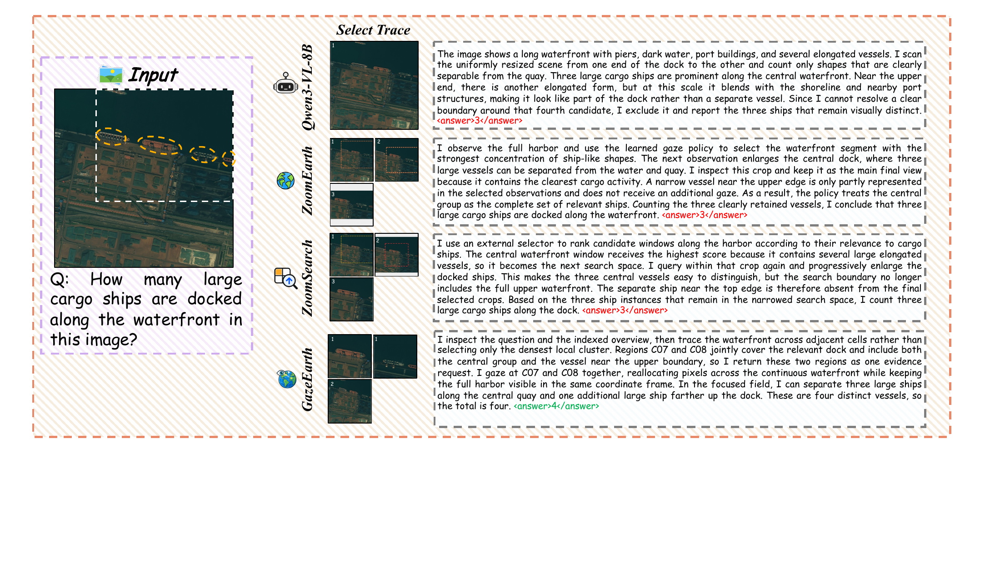
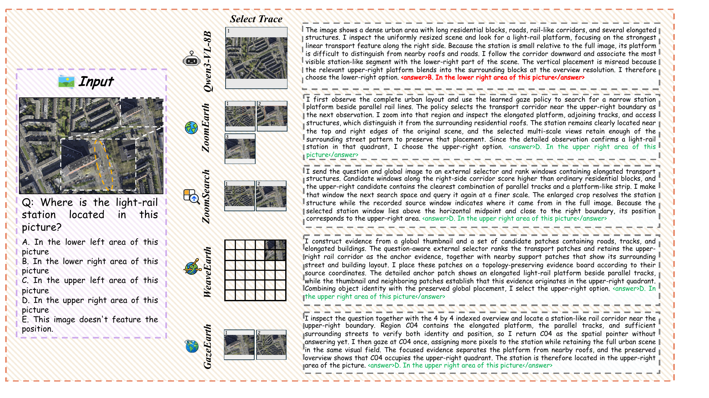
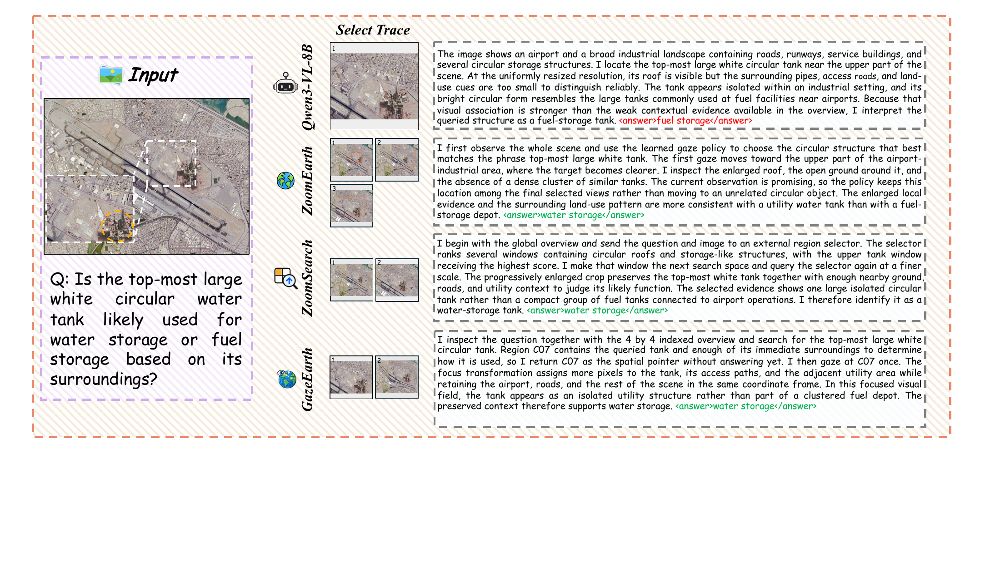
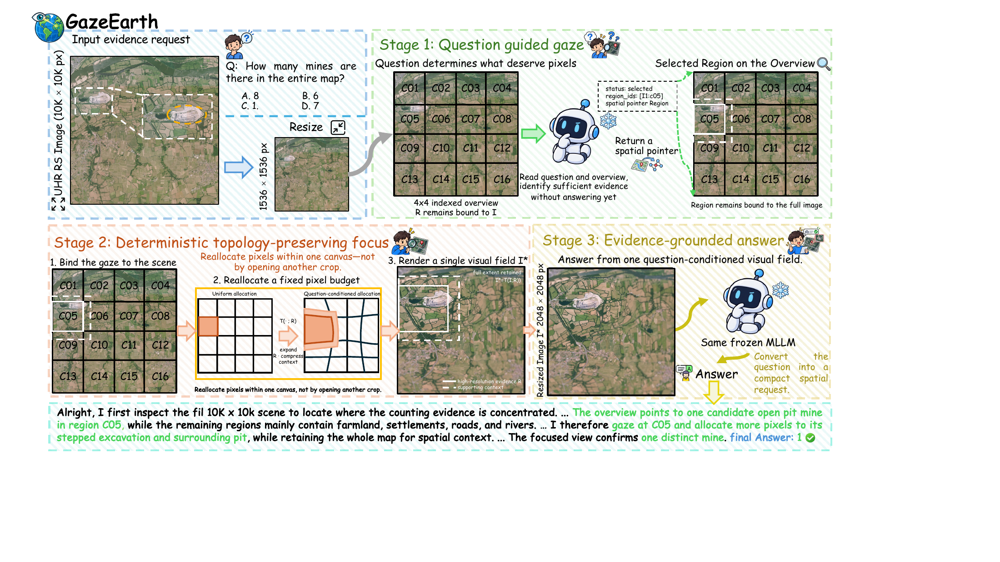
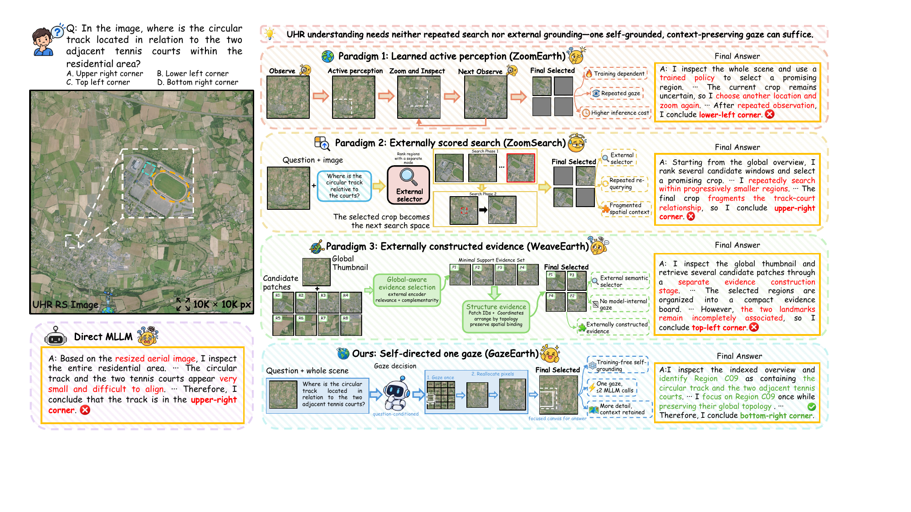

The Earth in One Gaze: Training-FreeActive Focus for UHR Remote Sensing Understanding
1 Wuhan University2 The University of Tokyo3 RIKEN AIP
* Equal contribution † Corresponding authors



Abstract
Multimodal large language models (MLLMs) must balance local detail against scene context when interpreting ultra-high-resolution (UHR) remote sensing (RS) imagery within a limited visual-input budget. Existing selection-based methods either prune tokens and select patches through relevance scoring, or crop actively through repeated inspection. Neither strategy directly redistributes pixels within a continuous full-scene view: the first retains selected tokens or patches, and the second re-encodes a crop detached from its surroundings. Our pilot study finds that a frozen MLLM already produces useful question-guided spatial requests, yet crop-based inspection of the selected regions does not consistently improve its answers. We therefore formulate UHR understanding as a question of where to spend a fixed pixel budget. Based on this, we introduce GazeEarth, a simple-yet-effective training-free framework that couples question-guided region selection with full-scene foveated observation. The MLLM selects evidence cells from an indexed overview; a deterministic, topology-preserving warp resamples the original image onto a fixed-size canvas, enlarging their shared neighborhood while compressing the periphery; the same frozen model answers from this focused view, using at most two MLLM calls and no external selector or iterative search. Across three UHR remote sensing benchmarks and four frozen backbones, GazeEarth improves benchmark-averaged accuracy by 4.6 to 9.4 percentage points over direct answering and 3.4 to 4.3 over overview answering, outperforming task-trained methods. Our analyses show that existing MLLMs can guide where to look in UHR images on their own, and that what they can infer from the selected evidence depends on how that evidence is presented.
Method Overview

A frozen MLLM selects evidence regions from the question and an indexed overview. A deterministic, topology-preserving warp enlarges the selected neighborhood within a fixed-size, full-scene canvas. The same model then answers from this focused observation, without fine-tuning or an external selector.
Case Study
A comparison of observation strategies for spatial reasoning.

Results
Cross-backbone evaluation on three remote sensing benchmarks.
| Observation | LRS-GRO | MME-RealWorld-RS | XLRS-Bench-Lite | Mean |
|---|---|---|---|---|
| Direct | 56.90 | 42.11 | 42.92 | 47.31 |
| Overview | 59.99 | 49.01 | 45.13 | 51.38 |
| GazeEarth | 61.00 | 52.43 | 53.51 | 55.65 |
Scores are reported in percent. Mean is the unweighted average of the three benchmark scores. Values follow the paper's cross-backbone table; see the paper for benchmark-specific evaluation protocols.
Citation
If you find this work useful in your research, please consider citing our paper.
@misc{zhang2026gazeearth,
title = {The Earth in One Gaze: Training-Free Active Focus
for {UHR} Remote Sensing Understanding},
author = {Yao Zhang and Pengyu Dai and Wei Guo and Jian Liang
and Jian Song and Yafei Ou and Hongruixuan Chen
and Naoto Yokoya},
year = {2026},
eprint = {2609.31747},
archivePrefix = {arXiv},
primaryClass = {cs.CV},
url = {https://arxiv.org/abs/2609.31747}
}